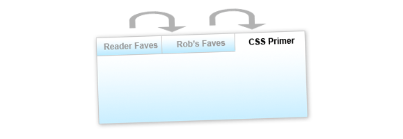
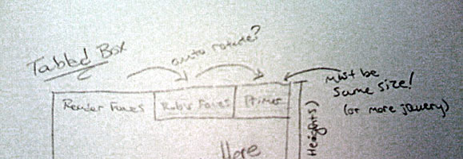
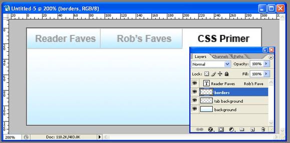

The longer a site has been around, the more content it tends to accumulate. As website operators, we walk a fine line: too much content on every page and your site will look cluttered. Too little, and users won’t be able to find all your website has to offer. A tabbed box like the one pictured above is a nice bridge between the two extremes. It allows you to show off a large amount of content without cluttering up a lot of space. And this tabbed box has extra niceties that are sure to help your content get noticed.
What it Does
At the end of this two-article series, you’ll be able to build a tabbed content box of your own that:
- Is easily customized to fit the size and color scheme of your website.
- Is either fixed or variable height.
- Can automatically rotate through the tabs to draw interest.
- Pauses its rotation when the user interacts with it.
This article will show you how to take the tabbed box from Photoshop to XHTML and CSS, and how to apply the basic jQuery functionality to make the tabs operate. The next article will show you some advanced jQuery techniques to make your tabbed box even more dynamic and eye-catching.
The Photoshop Mockup
Like most of my projects, this one started life as a drawing roughly sketched out on a piece of paper. Despite all the cool tools we web developers have at our disposal, paper and pencil are still by far the fastest way to rapidly prototype a new idea. Here’s a crappy iPhone photo of the drawing:

This is what I mean when I say I’m not a designer, people.
Once you have a good idea as to what you’re looking to do with your tabbed box, it’s time to move into Photoshop (or a similar editing tool). If you’re looking for an extremely barebones tabbed interface you can probably skip this step entirely, but I wanted my tabs to have a little pizzazz. Here’s a look at my Photoshop document:

It’s nothing fancy: just two layers with gradients, a layer creating my borders, and my text. Of course, your layout may be more complex than mine.
When I’m working in Photoshop, I like to stop and think about how I’m going to actually develop what I’m building (and I’d advocate you do the same!). In this case, I knew that I wanted gradients on both my unselected tabs as well as the content box and that my unselected tabs should appear faded. Once I had a pretty good mockup in place, I could start to visualize how my XHTML and CSS would work together to produce the result I was looking for.

The XHTML
Here’s the basic XHTML I decided on for my tabbed box:
<div class="tabbed-box">
<ul class="tabs">
<li><a href="#">Tab #1</a></li>
<li><a href="#">Tab #2</a></li>
<li><a href="#">Tab #3</a></li>
</ul>
<div class="tabbed-content">
<p>Here's my content for tab 1</p>
</div>
<div class="tabbed-content">
<p>Here's my content for tab 2</p>
</div>
<div class="tabbed-content">
<p>Here's my content for tab 3</p>
</div>
</div>
I wanted to keep my XHTML as simple as possible, so that if I ever wanted to update the content my tabbed box, I wouldn’t have to dig through a lot of extra code to do so. The box has three basic components: a wrapper div (tabbed-box) that holds my entire box together, an unordered list with links that will function as my tabs, and a series of divs (tabbed-content) to function as the containers for my tabbed content.
I decided early on to stay away from extra IDs on all my elements as much as possible, to keep the updating process as simple as possible. Of course, that meant my jQuery would have to work smarter to figure out how the box works… but we’ll get to that later.
The CSS
Developing the CSS for this box does take a little math and a good understanding of the box model, but it’s not overly complex. First we’ll style our container box:
.tabbed-box {
width: 302px;
background: #fff url(tabbed-body-bg.jpg) repeat-x bottom;
border: 1px solid #ddd; }
The width here is the most difficult number to determine. To come up with the number, I need to know two things: how much space I have to work with, and the number of tabs I plan to have. (I could probably calculate all this dynamically in jQuery, but I prefer to use CSS to accomplish as much as possible before turning to scripting.)
The space allotted is determined by the size of the tabbed box’s containing element: I built this box with CSS Newbie’s sidebar in mind, which gave me just over 300px of breathing room. Next up, I need to consider the number of tabs I’ll have. My box will have three tabs. If each of those tabs are 100px wide, they then use 3 * 100 (300) pixels of space. But don’t forget: according to our design, two of those tabs will need a border on one side to create the tabbed effect. This results in another two pixels added to our width, for a total of 100 * 3 + 2 (302) pixels. But remember, with the borders I added to my tabbed-box class, my final overall width is 100 * 3 + 2 + 2 (304) pixels.
Next up, we’ll style our tabs:
.tabbed-box .tabs li {
list-style: none;
float: left; }
.tabbed-box .tabs li a {
display: block;
width: 100px;
padding: 5px 0;
font-weight: bold;
text-align: center;
text-decoration: none;
color: #888;
background: #fff url(tabbed-tab-bg.jpg) repeat-x bottom;
border-left: 1px solid #ddd;
border-bottom: 1px solid #ddd;}
.tabbed-box .tabs li:first-child a {
border-left: none; }
First I’m removing the list style and floating my tabs to the left to get them lined up horizontally. Next I’m making them block-level, so the entire tab becomes clickable. Then I’m setting them to the appropriate width (100px in this case), giving them some padding, styling the text, applying my gradient background, and applying my borders to the left and bottom sides.
Next I have a rather specific rule: I’m removing the left border on the first-child element: this means that my very first tab won’t have a border on its left side, since the containing box has a border there and we don’t want to double up. Of course, first-child isn’t supported by Internet Explorer 6… but don’t worry, we’ll account for that in our jQuery.
Then all we have left to get our tabs in working order is to set how they behave in three states: hover, focus, and “active”:
.tabbed-box .tabs li a:hover {
color: #333; }
.tabbed-box .tabs li a:focus {
outline: none; }
.tabbed-box .tabs li a.active {
background: #fff;
color: #333;
border-bottom: 1px solid #fff; }
I’m giving my tabs a slightly darker text color in the hover state, to help the user see when they’re hovering. The focus state is there simply to remove the resulting outline in Firefox when the user clicks a tab: if you’re one of those who insist on having a focus state, feel free to leave this rule out. And finally, we have an active class. This class will be applied by our jQuery to the tab that is currently open. Here we’re removing the bottom border and changing the background color to give it the appearance of an open tab.
And last but not least, we need to apply some styles to our tabbed-content divs:
.tabbed-content {
padding: 3em 1em 1em 1em;
display: none; }
The padding simply pushes the content away from the edges of our box. You can set this to whatever you wish. And our display rule hides all our content, until it’s called upon by our jQuery.
The jQuery
Since we’re using the jQuery library to do most of our heavy lifting here, you’ll need to include the jQuery library somewhere above the following code.
Because I decided to write my XHTML without a lot of extra IDs and classes, my jQuery is going to have to be a lot smarter when it comes to figuring out which tabs display which content. My rationale is pretty straightforward: the first anchor in my unordered list should open the first tabbed-content div, the second one the second, and so on down the line. Because our logic is so straightfoward, I can rely on the jQuery index functionality to do a lot of the hard math.
var currentTab = 0;
function openTab(clickedTab) {
var thisTab = $(".tabbed-box .tabs a").index(clickedTab);
$(".tabbed-box .tabs li a").removeClass("active");
$(".tabbed-box .tabs li a:eq("+thisTab+")").addClass("active");
$(".tabbed-box .tabbed-content").hide();
$(".tabbed-box .tabbed-content:eq("+thisTab+")").show();
currentTab = thisTab;
}
I start out by declaring a global variable that I’ll use throughout the script: currentTab. The currentTab variable will hold the index (an internal counter, like in an array) of the tab we’re currently on. It will also serve later to decide which tab we open by default.
Our function looks more complicated than it is. It requires one variable to be passed it: the clickedTab variable, otherwise known as the tab the user just clicked on. It then calculates the index of that tab (if it was the 3rd tab, the index would be 2) and saves that number as thisTab.
Next, the script cycles through all our tabs and removes any instances of the “active” class if finds, before cycling through a second time and applying the active class to the tab that has the same index number as the tab that was clicked on (in other words, the same tab). This ensures we only ever have one active tab at a time. Then we cycle through our content boxes, hiding them all before cycling through again and showing only the one box that has the same index as our tab… meaning if the third tab was clicked, the third box will open. That bit of math is what saves us from having to apply IDs to all of our tabs and content boxes. Then we set the currentTab variable to our newly open tab’s index.
Now that our function is written, we can get our tabbed box ready for prime time:
$(document).ready(function() {
$(".tabs li:eq(0) a").css("border-left", "none");
$(".tabbed-box .tabs li a").click(function() {
openTab($(this)); return false;
});
$(".tabbed-box .tabs li a:eq("+currentTab+")").click()
});
The first line in our document ready function removes the left border of the first tab. Our CSS handled this for all browsers but IE6, but this bit of code takes care of IE6 as well.
Next, I’ve written a click function that will fire any time anyone clicks on any of our tabs. It only has two parts. First, it fires the openTab function, sending it a variable called “$(this)”. In jQuery, the $(this) variable in a function is always populated with the element on which the function was applied. So if the user clicks on the 2nd tab, our $(this) variable would contain that element. The “return false” after our function prevents the browser from trying to go to whatever we put in our anchor’s href.
And last but certainly not least, our final line forces a click on the tab with an ID that matches currentTab. In my example, that’s the first tab, but you can set currentTab to whatever you’d like to start, so long as currentTab is at least one less than the total number of tabs (since we start counting at zero).
And with that, we have a functioning tabbed box!
You can see this box in action here. The demo contains all the XHTML, CSS and jQuery you need to get this box up and running on your own site.
My next article will cover some advanced tricks you can do with this box, like getting it to cycle through automatically to catch the user’s eye… and how to stop the box from cycling once it has the user’s attention. To be sure to catch the article, you may want to subscribe to my newsfeed.
Great article, I’ve been looking for something like this. You should consider doing some video tutorials as well. I’m more of a visual learner than anything. Thanks again though!
Very nice tabs you got there! Thank you for sharing this.
Nicely done!
But you should hide the content just via javascript. Because if javascript is disabled, you even can’t see the content….
You might want to also have jQuery automatically open up the right tab (my tab list was called #tabnav) from the anchor in the URL: (hopefully this will show the code)…
//auto-click tabs from URL
var tablink = document.location.toString();
if (tablink.match(‘#’)) { // the URL contains an anchor
// click the navigation item corresponding to the anchor
var tabanchor = ‘#’ + tablink.split(‘#’)[1];
$(‘#tabnav li a[href="' + tabanchor + '"]‘).click();
return false;
}
This is great, however, it doesn’t seem to be keyboard accessible. It would not be accessible to screenreaders.
Pingback: 網站製作學習誌 » [Web] 連結分享
Pingback: robglazebrook.com » Blog Archive » Happy Hallothanchristmanewyear!
Pingback: Daily Links | AndySowards.com :: Professional Web Design, Development, Programming, Hacks, Downloads, Math and being a Web 2.0 Hipster?
Pingback: links for 2009-01-24 « Page 2
Pingback: Advanced jQuery Tabbed Box Techniques
Pingback: 25 jQuery Tutorials for Improved Navigation Menus
Pingback: My web notables… | Folks Pants: Tailor Made Internet
Pingback: Student Geeks - Build a Tabbed Box with CSS and jQuery
Thanks bud. I need to implement this in some code today and my JS is rusty.
This is very nice tabs and simple explanations too.
Woooow..this tips is so cool.. thank u Rob
Tips & Trick Computer and Internet
You could condense this page if you had a tabbed box to show the ccs, xhtml etc in tabs ! :)
Pingback: Creating a Tabbed Box with CSS and jQuery - WebStockBox
Pingback: My Little List of jQuery Tips, Tricks and Resources | Moral Fibre
or you could just go to ui.jquery.com and use the one that’s already built….
Pingback: The Words from a Bajan » Blog Archive » Build a Tabbed Box with CSS and jQuery
Really nice tabs, thanks for sharing. jQuery is fast becoming my favorite js library.
Nice tabs tutorial.
Someone ever thought about having multiple such tabboxes on one page?
Thank you very much for this tutorial. I was looking for this kind of tabs done in jQuery for long time. I needed it for one of my Intranet projects. I added onclick event to open certain tab from outside link. It works great.
Thanks
Pingback: » 100 Popular jQuery Examples, Plugins and Tutorials
I used the same set of tabbing twice on the same page, and it is causing problems, is it somehow possible to use this, for more than one tabbing?
Thanks in advance
@Naminder
I have multiple tabs on one page….I did it the ruff way :)
one function for eacht tab …
like Function tab1 .. tabbedbox1…Function tab2 .. tabbedbox2…
hmm…well…it works :)
Pingback: ZioNews » Advanced jQuery Tabbed Box Techniques
I got the idea and used it in a different way and used it 4 times on same page without creating different function for it.
Great Idea
Pingback: 25 jQuery Tutorials for Improved Navigation Menus | brainstorming magazine | use the brain to get ideas
Pingback: Colorrage Blog » Blog Archive » Advanced jQuery Tabbed Box Techniques
Great tutorial with very clear explanation. Does everything I was trying to do! Thanks!
@ Kiran Byajankar: RE Opening from outside url
I also would like to do this but don’t know how to get the tabs to open on the relevant tab from a url. How exactly did you do that?
Or anyone for that matter I am not the greatest at javascript and just want to be able to link to the page but a certain tab open depending on what link I use.
Used the instructions and code above on a test page and end up with extra space between the tabs. The 302 box size does not work with 100px tabs: it wraps the tabs. When I try decreasing the tab size incrementally, I get gaps between the tabs. To test this, I put a colored bg in the tabs. The result is white, color, white, color, white, color, white. It doesn’t matter how long the heading name is of each tab: the text will just extend beyond the color BG.
Any clues? I think I did everything, step-by-step, that you posted.
??
Thank you.
Problems: The first-child tab indents and the last tab runs off the end, beyond the limits of the box. Can someone help me find a solution to that?
Thank you,
Susie
brilliant idea, just what i was looking for, im not sure that i did the coding right could you perhaps send me the full code? jameslassan@googlemail.com cheers, from, James Lassan
cool tab!
Pingback: 42 jQuery Navigation based Techniques | Codrops
Pingback: Build a Tabbed Box with CSS and jQuery « Jbloo
Great Tut,
Does anyone have the java code to add multiple tabbed boxes to one page? I am not sure how to add separate functions. (new to java) :)
Pingback: web design proposal contracts | WebDesignExpert.Me
you need to add a rel tag to each element in the tabs
header1
header2
header3
header4
Here header1 and header2 will work separate to header3 and header4 as they are “grouped” by the rel value.
Also, you need to add the same rel value to each of their tabbed-contents. In this example, box1 for header1 and header2′s content; and box3 for header3 and header4′s.
or
Finally this javascript should work:
var currentTab = 0; // Set to a different number to start on a different tab.
var namesTab = ["box1", "box2"];
function openTab(clickedTab) {
var thisTab = $(“.tabbed-box .tabs a”).index(clickedTab);
var thisRel = clickedTab.attr(“rel”);
$(“.tabbed-box .tabs li a[rel='"+thisRel+"']“).removeClass(“active”);
$(“.tabbed-box .tabs li a:eq(“+thisTab+”)”).addClass(“active”);
$(“.tabbed-box .tabbed-content[rel='"+thisRel+"']“).hide();
$(“.tabbed-box .tabbed-content:eq(“+thisTab+”)”).show();
currentTab = thisTab;
}
$(document).ready(function() {
$(“.tabs li:eq(0) a”).css(“border-left”, “none”);
$(“.tabbed-box .tabs li a”).click(function() {
openTab($(this)); return false;
});
for (i=0; i<namesTab.length; i++)
$(".tabbed-box .tabs li a[rel='"+namesTab[i]+"']:eq("+currentTab+")").click()
});
Pingback: 五色六彩
Pingback: 25 Excellent jQuery Tutorials for Navigation Menu « AcrisDesign – Web Design Resources and Inspiration
Pingback: 100 Popular jQuery Examples, Plugins and Tutorials
Pingback: jQuery Plugins - Nagpur City
great post. i think this will be useful as well. how to select a tab from a text link instead of clicking a tab itself. I modified your code as below. see my example at,
http://code.google.com/p/jquerytabfromlink/downloads/detail?name=JQUERY-Tabs.zip&can=2&q=#makechanges
[...] them. The technique involves some editing a couple of lines from the document ready function. 72. Build a Tabbed Content with CSS and jQuery – This technique outlines the steps required to easily customize to fit the size and color [...]
Pingback: 37 Amazing Tutorials for jQuery Navigation Menus
Pingback: 30+ Best jQuery Tutorials & Plugins for Beginners